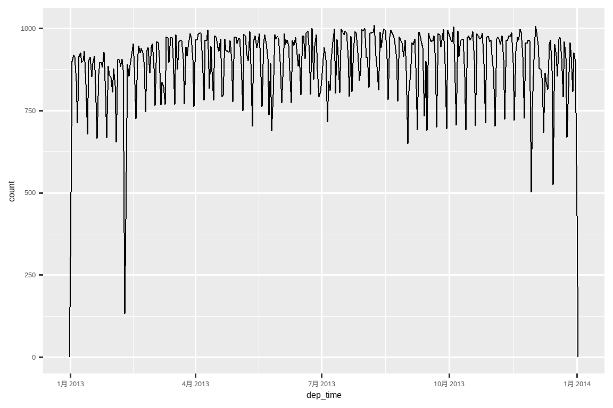
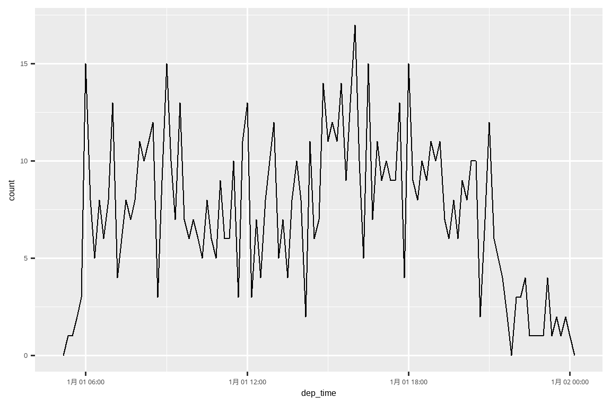
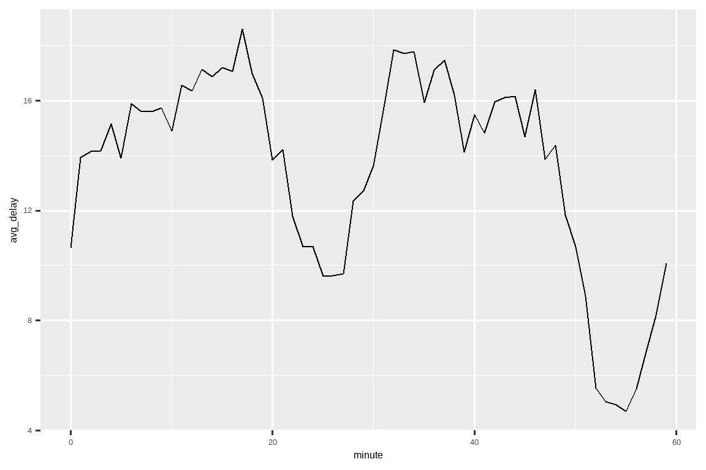
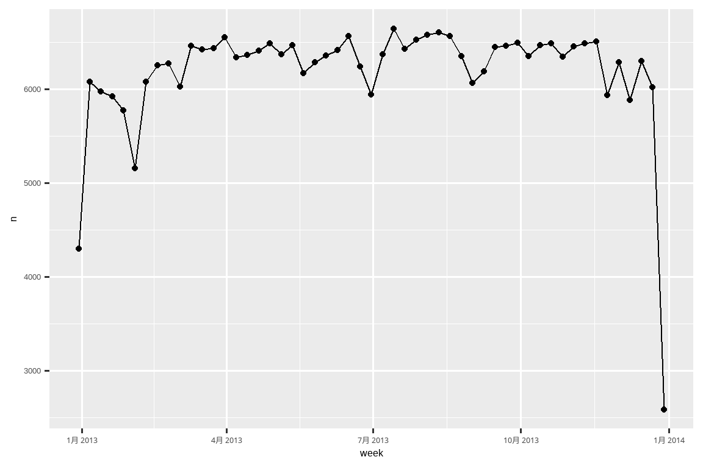
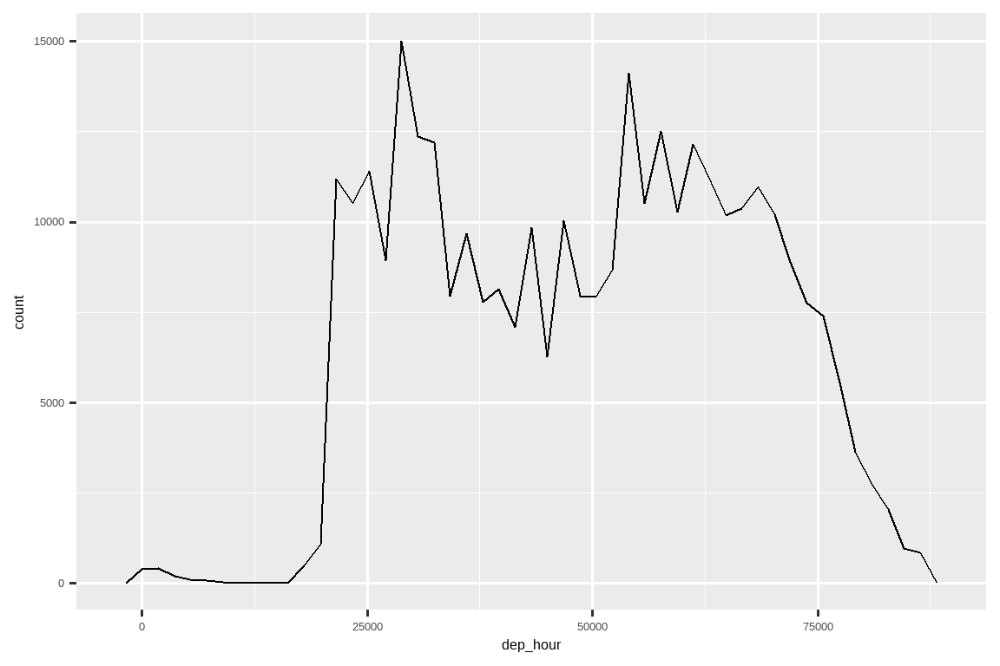
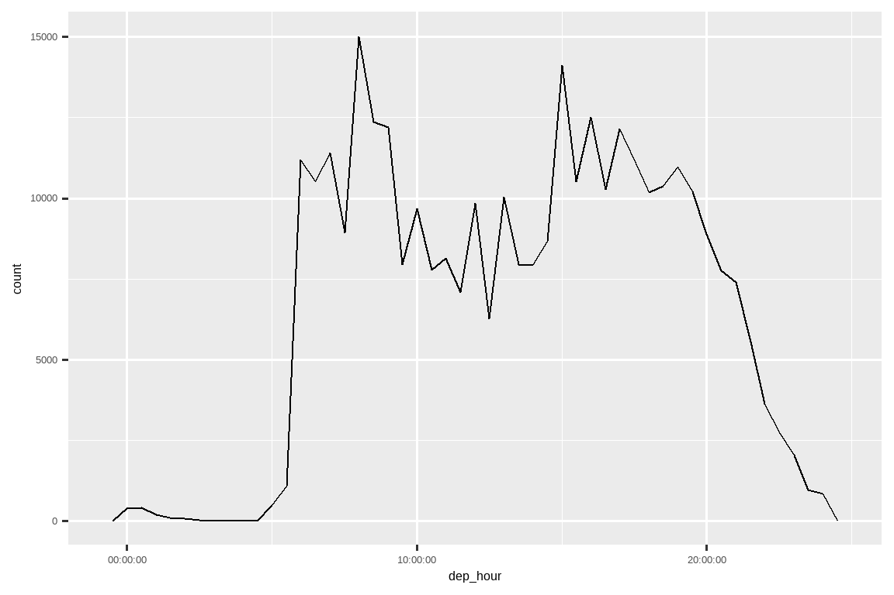

17 日期和时间
17.1 引言
本章将向你展示如何在 R 中处理日期和时间。乍一看，日期和时间似乎很简单。你在日常生活中一直在使用它们，并且它们似乎没有引起太多困惑。然而，你对日期和时间了解得越多，它们似乎就变得越复杂！
为了热身，请思考一下一年有多少天，一天有多少小时。你可能记得大多数年份有 365 天，但闰年有 366 天。你知道判断一年是否为闰年的完整规则吗1？一天中的小时数则不那么明显：大多数日子有 24 小时，但在使用夏令时 (Daylight Saving Time, DST) 的地方，每年有一天是 23 小时，另一天是 25 小时。
日期和时间之所以困难，是因为它们必须调和两种物理现象（地球的自转和它围绕太阳的公转）与一系列地缘政治现象，包括月份、时区和夏令时。本章不会教你关于日期和时间的每一个细节，但它会为你提供坚实的实践技能基础，帮助你应对常见的数据分析挑战。
我们将首先向你展示如何从各种输入创建日期时间，然后一旦你有了一个日期时间，你如何可以提取年、月、日等组成部分。接着，我们将深入探讨处理时间跨度的棘手话题，根据你的不同需求，时间跨度有多种形式。最后，我们将简要讨论时区带来的额外挑战。
17.1.1 前提条件
本章将重点介绍 lubridate 包，它使得在 R 中处理日期和时间变得更加容易。自最新的 tidyverse 版本发布以来，lubridate 已成为核心 tidyverse 的一部分。我们还需要 nycflights13 来获取练习数据。
17.2 创建日期/时间
有三种类型的日期/时间数据指代一个时间点：
日期 (date)。Tibble 将其打印为
<date>。一天中的时间 (time)。Tibble 将其打印为
<time>。日期时间 (date-time) 是日期加上时间：它唯一地标识了一个时间点（通常精确到秒）。Tibble 将其打印为
<dttm>。基础 R 称之为 POSIXct，但这名字并不上口。
在本章中，我们将重点关注日期和日期时间，因为 R 没有用于存储时间的原生类。如果你需要一个，可以使用 hms 包。
你应该始终使用能满足你需求的最简单的数据类型。这意味着如果你可以使用日期而不是日期时间，你就应该这样做。日期时间要复杂得多，因为需要处理时区问题，我们将在本章末尾再回到这个问题。
要获取当前日期或日期时间，你可以使用 today() 或 now()：
此外，以下各节描述了你可能创建日期/时间的四种方式：
- 使用 readr 读取文件时。
- 从字符串。
- 从单独的日期时间组件。
- 从现有的日期/时间对象。
17.2.1 在导入期间
如果你的 CSV 文件包含 ISO8601 格式的日期或日期时间，你无需做任何事情；readr 会自动识别它：
csv <- "
date,datetime
2022-01-02,2022-01-02 05:12
"
read_csv(csv)
#> # A tibble: 1 × 2
#> date datetime
#> <date> <dttm>
#> 1 2022-01-02 2022-01-02 05:12:00如果你之前没有听说过 ISO8601，它是一个书写日期的国际标准2，其中日期的各个部分从大到小排列，并用 - 分隔。例如，在 ISO8601 中，2022 年 5 月 3 日写作 2022-05-03。ISO8601 日期也可以包含时间，其中小时、分钟和秒用 : 分隔，日期和时间部分用 T 或空格分隔。例如，你可以将 2022 年 5 月 3 日下午 4:26 写成 2022-05-03 16:26 或 2022-05-03T16:26。
对于其他日期时间格式，你需要使用 col_types 加上 col_date() 或 col_datetime() 以及一个日期时间格式。readr 使用的日期时间格式是许多编程语言通用的标准，用一个 % 后跟一个字符来描述日期组件。例如，%Y-%m-%d 指定一个由年、-、月（数字）、-、日组成的日期。表 Table 17.1 列出了所有选项。
| 类型 | 代码 | 含义 | 示例 |
|---|---|---|---|
| 年 | %Y |
4 位数年份 | 2021 |
%y |
2 位数年份 | 21 | |
| 月 | %m |
数字 | 2 |
%b |
缩写名称 | Feb | |
%B |
完整名称 | February | |
| 日 | %d |
一位或两位数 | 2 |
%e |
两位数 | 02 | |
| 时间 | %H |
24 小时制小时 | 13 |
%I |
12 小时制小时 | 1 | |
%p |
AM/PM | pm | |
%M |
分钟 | 35 | |
%S |
秒 | 45 | |
%OS |
带小数的秒 | 45.35 | |
%Z |
时区名称 | America/Chicago | |
%z |
与 UTC 的偏移量 | +0800 | |
| 其他 | %. |
跳过一个非数字字符 | : |
%* |
跳过任意数量的非数字字符 |
下面的代码展示了几个应用于一个非常模糊的日期的选项：
csv <- "
date
01/02/15
"
read_csv(csv, col_types = cols(date = col_date("%m/%d/%y")))
#> # A tibble: 1 × 1
#> date
#> <date>
#> 1 2015-01-02
read_csv(csv, col_types = cols(date = col_date("%d/%m/%y")))
#> # A tibble: 1 × 1
#> date
#> <date>
#> 1 2015-02-01
read_csv(csv, col_types = cols(date = col_date("%y/%m/%d")))
#> # A tibble: 1 × 1
#> date
#> <date>
#> 1 2001-02-15请注意，无论你如何指定日期格式，一旦将其导入 R，它总是以相同的方式显示。
如果你使用 %b 或 %B 并且处理非英语日期，你还需要提供一个 locale()。请参阅 date_names_langs() 中的内置语言列表，或使用 date_names() 创建你自己的。
17.2.2 从字符串
日期时间格式规范语言功能强大，但需要仔细分析日期格式。另一种方法是使用 lubridate 的辅助函数，这些函数在你指定了组件顺序后会尝试自动确定格式。要使用它们，请确定年、月、日在你的日期中出现的顺序，然后按相同的顺序排列 “y”、“m” 和 “d”。这就得到了将解析你日期的 lubridate 函数的名称。例如：
ymd() 和类似的函数创建日期。要创建一个日期时间，请在解析函数名称的末尾加上一个下划线和 “h”、“m”、“s” 中的一个或多个：
你也可以通过提供一个时区来强制从一个日期创建一个日期时间：
ymd("2017-01-31", tz = "UTC")
#> [1] "2017-01-31 UTC"这里我使用了 UTC3 时区，你可能也知道它是 GMT，即格林尼治标准时间 (Greenwich Mean Time)，是 0° 经度的时间4。它不使用夏令时，这使得计算起来稍微容易一些。
17.2.3 从单个组件
有时，你不会有一个单一的字符串，而是将日期时间的各个组件分布在多个列中。这就是我们在 flights 数据中遇到的情况：
flights |>
select(year, month, day, hour, minute)
#> # A tibble: 336,776 × 5
#> year month day hour minute
#> <int> <int> <int> <dbl> <dbl>
#> 1 2013 1 1 5 15
#> 2 2013 1 1 5 29
#> 3 2013 1 1 5 40
#> 4 2013 1 1 5 45
#> 5 2013 1 1 6 0
#> 6 2013 1 1 5 58
#> # ℹ 336,770 more rows要从这类输入创建一个日期/时间，对日期使用 make_date()，对日期时间使用 make_datetime()：
flights |>
select(year, month, day, hour, minute) |>
mutate(departure = make_datetime(year, month, day, hour, minute))
#> # A tibble: 336,776 × 6
#> year month day hour minute departure
#> <int> <int> <int> <dbl> <dbl> <dttm>
#> 1 2013 1 1 5 15 2013-01-01 05:15:00
#> 2 2013 1 1 5 29 2013-01-01 05:29:00
#> 3 2013 1 1 5 40 2013-01-01 05:40:00
#> 4 2013 1 1 5 45 2013-01-01 05:45:00
#> 5 2013 1 1 6 0 2013-01-01 06:00:00
#> 6 2013 1 1 5 58 2013-01-01 05:58:00
#> # ℹ 336,770 more rows让我们对 flights 中的四个时间列做同样的事情。这些时间的表示格式有点奇特，所以我们使用模运算来提取小时和分钟组件。一旦我们创建了日期时间变量，我们就专注于本章其余部分将要探讨的变量。
make_datetime_100 <- function(year, month, day, time) {
make_datetime(year, month, day, time %/% 100, time %% 100)
}
flights_dt <- flights |>
filter(!is.na(dep_time), !is.na(arr_time)) |>
mutate(
dep_time = make_datetime_100(year, month, day, dep_time),
arr_time = make_datetime_100(year, month, day, arr_time),
sched_dep_time = make_datetime_100(year, month, day, sched_dep_time),
sched_arr_time = make_datetime_100(year, month, day, sched_arr_time)
) |>
select(origin, dest, ends_with("delay"), ends_with("time"))
flights_dt
#> # A tibble: 328,063 × 9
#> origin dest dep_delay arr_delay dep_time sched_dep_time
#> <chr> <chr> <dbl> <dbl> <dttm> <dttm>
#> 1 EWR IAH 2 11 2013-01-01 05:17:00 2013-01-01 05:15:00
#> 2 LGA IAH 4 20 2013-01-01 05:33:00 2013-01-01 05:29:00
#> 3 JFK MIA 2 33 2013-01-01 05:42:00 2013-01-01 05:40:00
#> 4 JFK BQN -1 -18 2013-01-01 05:44:00 2013-01-01 05:45:00
#> 5 LGA ATL -6 -25 2013-01-01 05:54:00 2013-01-01 06:00:00
#> 6 EWR ORD -4 12 2013-01-01 05:54:00 2013-01-01 05:58:00
#> # ℹ 328,057 more rows
#> # ℹ 3 more variables: arr_time <dttm>, sched_arr_time <dttm>, …有了这些数据，我们可以可视化一年中出发时间的分布情况：
flights_dt |>
ggplot(aes(x = dep_time)) +
geom_freqpoly(binwidth = 86400) # 86400 秒 = 1 天
或者在一天之内：
flights_dt |>
filter(dep_time < ymd(20130102)) |>
ggplot(aes(x = dep_time)) +
geom_freqpoly(binwidth = 600) # 600 秒 = 10 分钟
请注意，当你在数值上下文中使用日期时间（如在直方图中），1 表示 1 秒，所以 binwidth 为 86400 意味着一天。对于日期，1 表示 1 天。
17.2.4 从其他类型
你可能想要在日期时间和日期之间切换。这是 as_datetime() 和 as_date() 的工作：
as_datetime(today())
#> [1] "2025-07-10 UTC"
as_date(now())
#> [1] "2025-07-10"有时你会得到以距离“Unix 纪元”（1970-01-01）的数值偏移量表示的日期/时间。如果偏移量以秒为单位，使用 as_datetime()；如果以天为单位，使用 as_date()。
as_datetime(60 * 60 * 10)
#> [1] "1970-01-01 10:00:00 UTC"
as_date(365 * 10 + 2)
#> [1] "1980-01-01"17.2.5 练习
17.3 日期时间组件
既然你知道了如何将日期时间数据导入 R 的日期时间数据结构中，让我们来探索一下你可以用它们做什么。本节将重点介绍让你获取和设置单个组件的访问器函数。下一节将探讨日期时间的算术运算如何工作。
17.3.1 获取组件
你可以使用访问器函数 year()、month()、mday() (月中的天)、yday() (年中的天)、wday() (周中的天)、hour()、minute() 和 second() 来提取日期的各个部分。这些函数实际上是 make_datetime() 的反向操作。
对于 month() 和 wday()，你可以设置 label = TRUE 来返回月份或星期几的缩写名称。设置 abbr = FALSE 来返回完整名称。
我们可以使用 wday() 看到，工作日起飞的航班比周末多：
我们还可以查看一小时内按分钟划分的平均出发延误。有一个有趣的模式：在 20-30 分钟和 50-60 分钟之间起飞的航班延误时间远低于该小时的其他时间！
flights_dt |>
mutate(minute = minute(dep_time)) |>
group_by(minute) |>
summarize(
avg_delay = mean(dep_delay, na.rm = TRUE),
n = n()
) |>
ggplot(aes(x = minute, y = avg_delay)) +
geom_line()
有趣的是，如果我们看计划出发时间，我们没有看到这么强的模式：
sched_dep <- flights_dt |>
mutate(minute = minute(sched_dep_time)) |>
group_by(minute) |>
summarize(
avg_delay = mean(arr_delay, na.rm = TRUE),
n = n()
)
ggplot(sched_dep, aes(x = minute, y = avg_delay)) +
geom_line()
那么为什么我们在实际出发时间上看到了那种模式呢？嗯，就像许多由人类收集的数据一样，航班倾向于在“整点”出发时间起飞，存在着强烈的偏好，如 Figure 17.1 所示。每当你处理涉及人类判断的数据时，都要警惕这种模式！

17.3.2 取整
绘制单个组件的另一种方法是将日期取整到附近的时间单位，使用 floor_date()、round_date() 和 ceiling_date()。每个函数都接受一个要调整的日期向量，然后是要向下取整 (floor)、向上取整 (ceiling) 或四舍五入的单位名称。例如，这使我们能够绘制每周的航班数量：
flights_dt |>
count(week = floor_date(dep_time, "week")) |>
ggplot(aes(x = week, y = n)) +
geom_line() +
geom_point()
你可以通过计算 dep_time 与当天最早时刻之间的差值，来展示一天中航班的分布情况：
flights_dt |>
mutate(dep_hour = dep_time - floor_date(dep_time, "day")) |>
ggplot(aes(x = dep_hour)) +
geom_freqpoly(binwidth = 60 * 30)
#> Don't know how to automatically pick scale for object of type <difftime>.
#> Defaulting to continuous.
计算一对日期时间之间的差值会得到一个 difftime 对象（更多内容见 Section 17.4.3）。我们可以将其转换为 hms 对象，以获得更有用的 x 轴：
flights_dt |>
mutate(dep_hour = hms::as_hms(dep_time - floor_date(dep_time, "day"))) |>
ggplot(aes(x = dep_hour)) +
geom_freqpoly(binwidth = 60 * 30)
17.3.3 修改组件
你也可以使用每个访问器函数来修改日期/时间的组件。这在数据分析中不常用，但在清理有明显错误日期的数据时可能很有用。
或者，你也可以不修改现有变量，而是使用 update() 创建一个新的日期时间。这也允许你一步设置多个值：
update(datetime, year = 2030, month = 2, mday = 2, hour = 2)
#> [1] "2030-02-02 02:34:56 UTC"如果值过大，它们会“滚动”到下一个单位：
17.3.4 练习
一天中航班时间的分布如何随着年份的推移而变化？
比较
dep_time、sched_dep_time和dep_delay。它们是否一致？解释你的发现。比较
air_time与出发和到达之间的时间差。解释你的发现。（提示：考虑机场的位置。）平均延误时间在一天中是如何变化的？你应该使用
dep_time还是sched_dep_time？为什么？如果你想最小化延误的几率，应该选择星期几出发？
是什么使得
diamonds$carat和flights$sched_dep_time的分布相似？证实我们的假设：20-30 分钟和 50-60 分钟内航班的提早出发是由计划航班提早起飞造成的。提示：创建一个二元变量，告诉你一个航班是否延误。
17.4 时间跨度
接下来你将学习日期的算术运算，包括减法、加法和除法。在此过程中，你将学习到三个表示时间跨度的重要类：
- durations（时长），表示精确的秒数。
- periods（周期），表示人类的单位，如周和月。
- intervals（区间），表示一个起点和一个终点。
你如何在时长 (duration)、周期 (period) 和区间 (interval) 之间选择？一如既往，选择能解决你问题的最简单的数据结构。如果你只关心物理时间，使用时长；如果你需要加上人类的时间单位，使用周期；如果你需要计算一个跨度在人类单位中有多长，使用区间。
17.4.1 时长 (Durations)
在 R 中，当你用一个日期减去另一个日期时，你会得到一个 difftime 对象：
一个 difftime 类的对象记录了一个以秒、分钟、小时、天或周为单位的时间跨度。这种模糊性可能会让 difftime 的使用有些痛苦，所以 lubridate 提供了一个总是使用秒的替代方案：duration（时长）。
as.duration(h_age)
#> [1] "1443398400s (~45.74 years)"Durations（时长）附带了一系列方便的构造函数：
dseconds(15)
#> [1] "15s"
dminutes(10)
#> [1] "600s (~10 minutes)"
dhours(c(12, 24))
#> [1] "43200s (~12 hours)" "86400s (~1 days)"
ddays(0:5)
#> [1] "0s" "86400s (~1 days)" "172800s (~2 days)"
#> [4] "259200s (~3 days)" "345600s (~4 days)" "432000s (~5 days)"
dweeks(3)
#> [1] "1814400s (~3 weeks)"
dyears(1)
#> [1] "31557600s (~1 years)"时长总是以秒为单位记录时间跨度。更大的单位是通过将分钟、小时、天、周和年转换为秒来创建的：1 分钟 60 秒，1 小时 60 分钟，1 天 24 小时，1 周 7 天。更大的时间单位问题更多。一年使用一年中的“平均”天数，即 365.25 天。没有办法将一个月转换为时长，因为变数太多了。
你可以对时长进行加法和乘法运算：
你可以将时长加到日期上或从日期中减去：
然而，因为时长代表的是一个精确的秒数，有时你可能会得到一个意想不到的结果：
为什么 3 月 8 日凌晨 1 点之后的一天是 3 月 9 日凌晨 2 点？如果你仔细看日期，你可能还会注意到时区已经改变了。3 月 8 日只有 23 个小时，因为那天是夏令时开始的时候，所以如果我们加上一整天的秒数，我们最终会得到一个不同的时间。
17.4.2 周期 (Periods)
为了解决这个问题，lubridate 提供了 periods（周期）。周期也是时间跨度，但没有固定的秒数长度，而是使用“人类”的时间单位，比如天和月。这使得它们能以更直观的方式工作：
one_am
#> [1] "2026-03-08 01:00:00 EST"
one_am + days(1)
#> [1] "2026-03-09 01:00:00 EDT"和时长一样，周期也可以通过一些方便的构造函数创建。
你可以对周期进行加法和乘法运算：
当然，还可以把它们加到日期上。与时长相比，周期更可能做到你所期望的：
让我们用周期来修正一个与我们航班日期有关的奇怪现象。一些飞机似乎在从纽约市起飞之前就到达了目的地。
flights_dt |>
filter(arr_time < dep_time)
#> # A tibble: 10,633 × 9
#> origin dest dep_delay arr_delay dep_time sched_dep_time
#> <chr> <chr> <dbl> <dbl> <dttm> <dttm>
#> 1 EWR BQN 9 -4 2013-01-01 19:29:00 2013-01-01 19:20:00
#> 2 JFK DFW 59 NA 2013-01-01 19:39:00 2013-01-01 18:40:00
#> 3 EWR TPA -2 9 2013-01-01 20:58:00 2013-01-01 21:00:00
#> 4 EWR SJU -6 -12 2013-01-01 21:02:00 2013-01-01 21:08:00
#> 5 EWR SFO 11 -14 2013-01-01 21:08:00 2013-01-01 20:57:00
#> 6 LGA FLL -10 -2 2013-01-01 21:20:00 2013-01-01 21:30:00
#> # ℹ 10,627 more rows
#> # ℹ 3 more variables: arr_time <dttm>, sched_arr_time <dttm>, …这些是过夜航班。我们对出发和到达时间使用了相同的日期信息，但这些航班是在第二天到达的。我们可以通过给每个过夜航班的到达时间加上 days(1) 来修正这个问题。
现在我们所有的航班都遵守物理定律了。
flights_dt |>
filter(arr_time < dep_time)
#> # A tibble: 0 × 10
#> # ℹ 10 variables: origin <chr>, dest <chr>, dep_delay <dbl>,
#> # arr_delay <dbl>, dep_time <dttm>, sched_dep_time <dttm>, …17.4.3 区间 (Intervals)
dyears(1) / ddays(365) 返回什么？它不完全是 1，因为 dyears() 被定义为平均每年所含的秒数，也就是 365.25 天。
years(1) / days(1) 返回什么？嗯，如果年份是 2015 年，它应该返回 365，但如果是 2016 年，它应该返回 366！lubridate 没有足够的信息来给出一个明确的答案。它所做的是给出一个估计值：
如果你想要一个更精确的度量，你将需要使用 interval (区间)。一个区间是一对开始和结束的日期时间，或者你可以把它看作是一个有起点的时长。
你可以通过 start %--% end 来创建一个区间：
然后你可以用 days() 来除它，以找出一年中包含多少天：
17.4.4 练习
向一个刚开始学习 R 的人解释
days(!overnight)和days(overnight)。你需要知道的关键事实是什么？创建一个日期向量，给出 2015 年每个月的第一天。创建一个日期向量，给出当前年份每个月的第一天。
编写一个函数，给定你的生日（作为日期），返回你的年龄（以年为单位）。
为什么
(today() %--% (today() + years(1))) / months(1)不起作用？
17.5 时区
时区是一个极其复杂的话题，因为它与地缘政治实体相互作用。幸运的是，我们不需要深入了解所有细节，因为它们对数据分析并非都重要，但我们确实需要正面应对一些挑战。
第一个挑战是时区的日常名称往往是模棱两可的。例如，如果你是美国人，你可能熟悉 EST，即东部标准时间 (Eastern Standard Time)。然而，澳大利亚和加拿大也有 EST！为了避免混淆，R 使用国际标准的 IANA 时区。这些时区使用一致的命名方案 {地区}/{位置}，通常形式为 {大洲}/{城市} 或 {大洋}/{城市}。例如 “America/New_York”, “Europe/Paris” 和 “Pacific/Auckland”。
你可能会好奇为什么时区使用城市名称，而通常你认为时区是与一个国家或国家内的某个区域相关联的。这是因为 IANA 数据库必须记录数十年的时区规则。几十年来，国家名称（或分裂）变更相当频繁，但城市名称往往保持不变。另一个问题是，名称不仅需要反映当前的行为，还需要反映完整的历史。例如，“America/New_York” 和 “America/Detroit” 都有时区。这两个城市目前都使用东部标准时间，但在 1969-1972 年，密歇根州（底特律所在的州）没有遵循夏令时，所以它需要一个不同的名称。值得一读原始的时区数据库（可在 https://www.iana.org/time-zones 获取），仅仅为了读一些这样的故事！
你可以用 Sys.timezone() 来查看 R 认为你当前的时区是什么：
Sys.timezone()
#> [1] "Asia/Shanghai"（如果 R 不知道，你会得到一个 NA。）
并用 OlsonNames() 查看所有时区名称的完整列表：
length(OlsonNames())
#> [1] 597
head(OlsonNames())
#> [1] "Africa/Abidjan" "Africa/Accra" "Africa/Addis_Ababa"
#> [4] "Africa/Algiers" "Africa/Asmara" "Africa/Asmera"在 R 中，时区是日期时间的一个属性，只控制打印显示。例如，下面这三个对象代表同一时刻：
你可以用减法来验证它们是同一时间：
x1 - x2
#> Time difference of 0 secs
x1 - x3
#> Time difference of 0 secs除非另有说明，lubridate 总是使用 UTC。UTC（协调世界时）是科学界使用的标准时区，大致相当于 GMT（格林尼治标准时间）。它没有夏令时，这使其成为一个方便的计算表示。结合日期时间的运算，比如 c()，通常会丢掉时区。在这种情况下，日期时间将以第一个元素的时区显示：
x4 <- c(x1, x2, x3)
x4
#> [1] "2024-06-01 12:00:00 EDT" "2024-06-01 12:00:00 EDT"
#> [3] "2024-06-01 12:00:00 EDT"你可以用两种方式改变时区：
-
保持时间点不变，改变它的显示方式。当时间点是正确的，但你想要一个更自然的显示时，使用这种方式。
x4a <- with_tz(x4, tzone = "Australia/Lord_Howe") x4a #> [1] "2024-06-02 02:30:00 +1030" "2024-06-02 02:30:00 +1030" #> [3] "2024-06-02 02:30:00 +1030" x4a - x4 #> Time differences in secs #> [1] 0 0 0（这也说明了时区的另一个挑战：它们并非都是整数小时的偏移！）
-
改变底层的时间点。当一个时间点被标记了错误的时区，而你需要修正它时，使用这种方式。
x4b <- force_tz(x4, tzone = "Australia/Lord_Howe") x4b #> [1] "2024-06-01 12:00:00 +1030" "2024-06-01 12:00:00 +1030" #> [3] "2024-06-01 12:00:00 +1030" x4b - x4 #> Time differences in hours #> [1] -14.5 -14.5 -14.5
17.6 总结
本章向你介绍了 lubridate 提供的帮助你处理日期时间数据的工具。处理日期和时间似乎比必要的要困难，但希望本章能帮助你理解原因——日期时间比初看起来要复杂得多，处理每一种可能的情况都增加了复杂性。即使你的数据从未跨越夏令时边界或涉及闰年，函数也需要能够处理这些情况。
下一章将总结缺失值。你已经在一些地方看到过它们，并且无疑在自己的分析中遇到过，现在是时候提供一系列处理它们的有用技巧了。